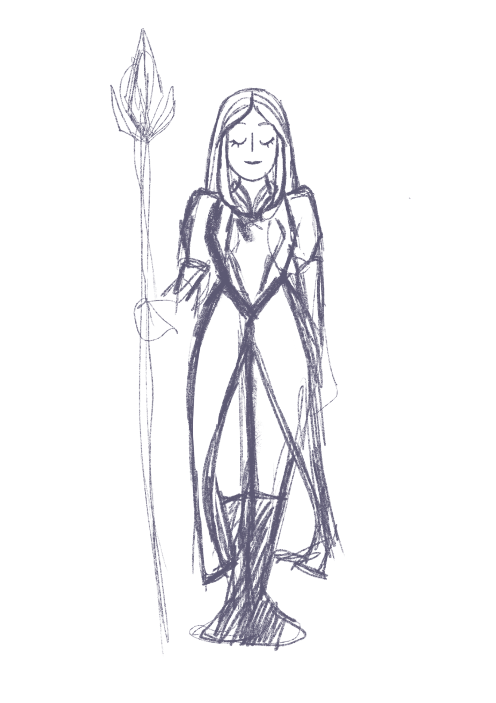
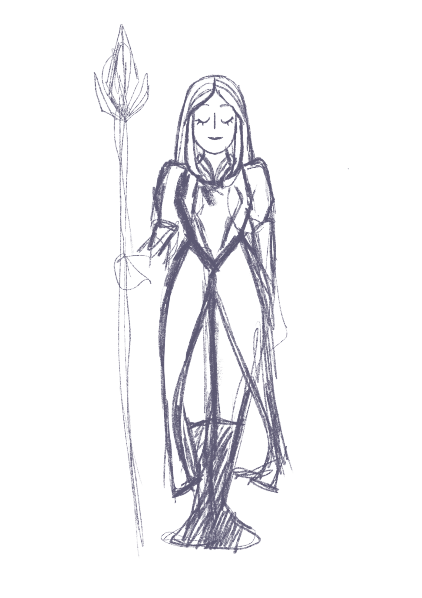

Salut à toi jeune chevalier, si toi aussi tu souhaites découvrir un trésor et obtenir un maximum de pouvoir, tu es sur le bon chemin. Nous allons maintenant te montrer les références qui nous ont inspiré pour le graphisme mais également pour la composition graphique.
Notre graphisme est basé sur des illustrations
de cartes de jeux à boire,
réalisées par Dario Genuardi, pour Forst.
Le concept de notre énigme repose sur une île flottante
sur lequel se dessine des ruines médiévales,
avec une grande épée qui surplombe toute l'île .
En ce qui concerne les couleurs
nous sommes partis sur une gamme colorimétrique assez douce,
pastelle, pour trancher avec l'univers assez barbare de la chevalerie.
Voici les croquis que nous avons réalisés pour notre design.
 
